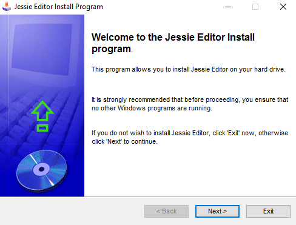
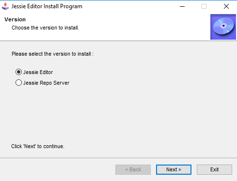
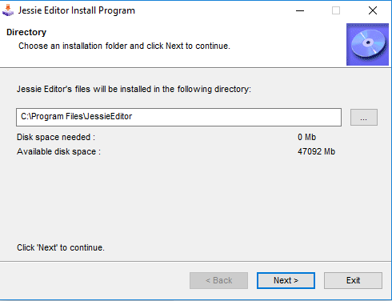
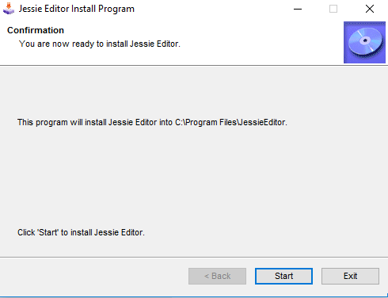

Installing Jessie Editor
To install Jessie Editor insert the instillation CD and click setup.exe to start the installer.

The installer will start up on the welcome screen. Click the next button to select a version to install
If you would like to install Jessie Editor then select Jessie Editor. For the Repo Server select Jessie Repo Server.

After selecting a version click the next button to see the liscense agreement.
Read
over the liscenese the click the next button. If you chose Jessie
Editor then you will have the option to set the installation directory.
If
you chose the server then you will be asked to confirm the installer.
Once you finish choosing installation directory in Jessie Editor,
you will also be asked to confirm the installation. Finally click next to install the program.


Once the installation has finished, you have sucessfully installed Jessie Editor/Repo Server!
back